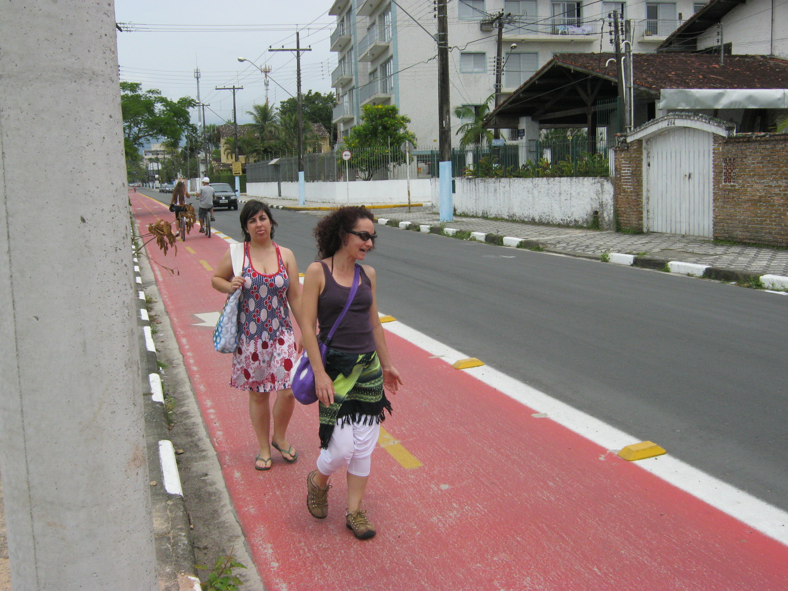
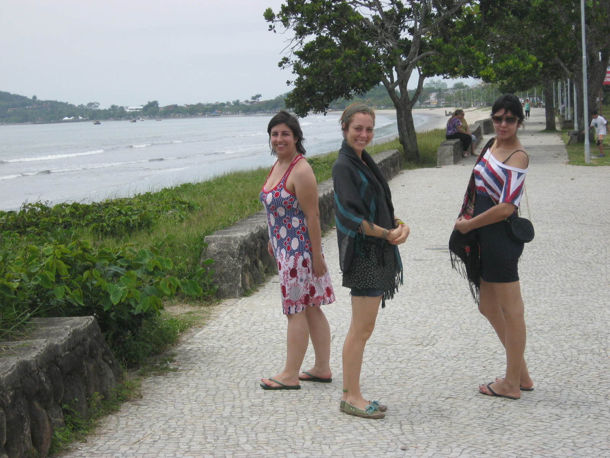
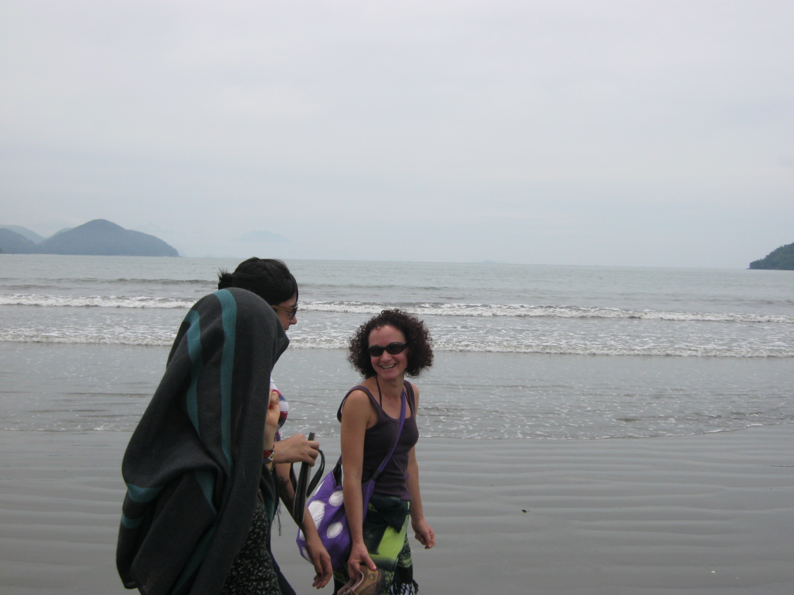
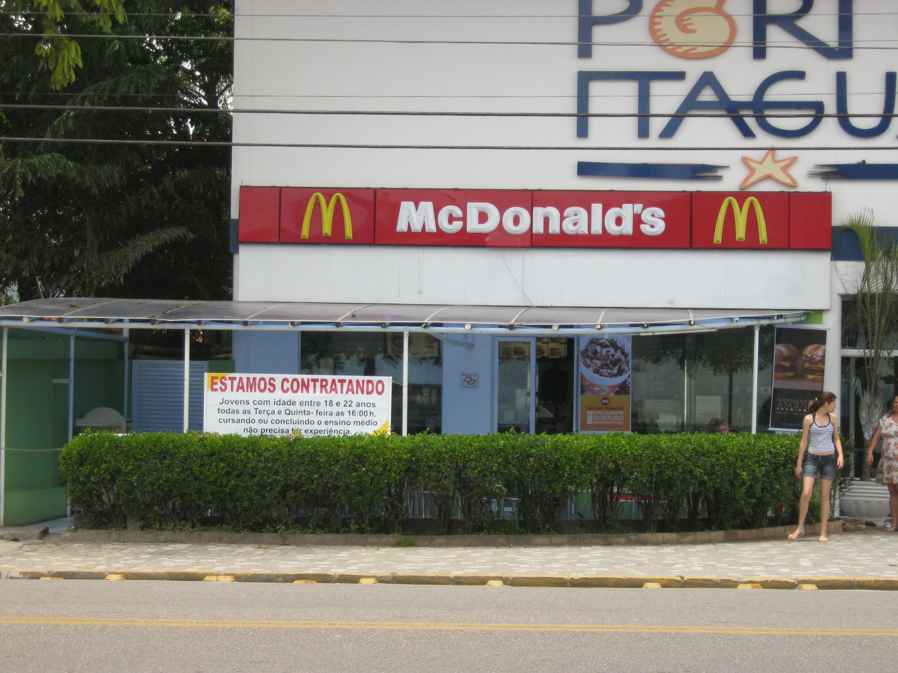
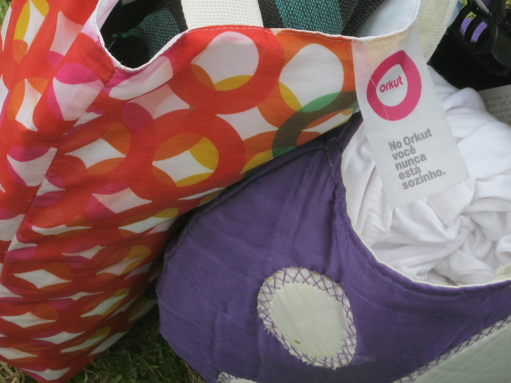
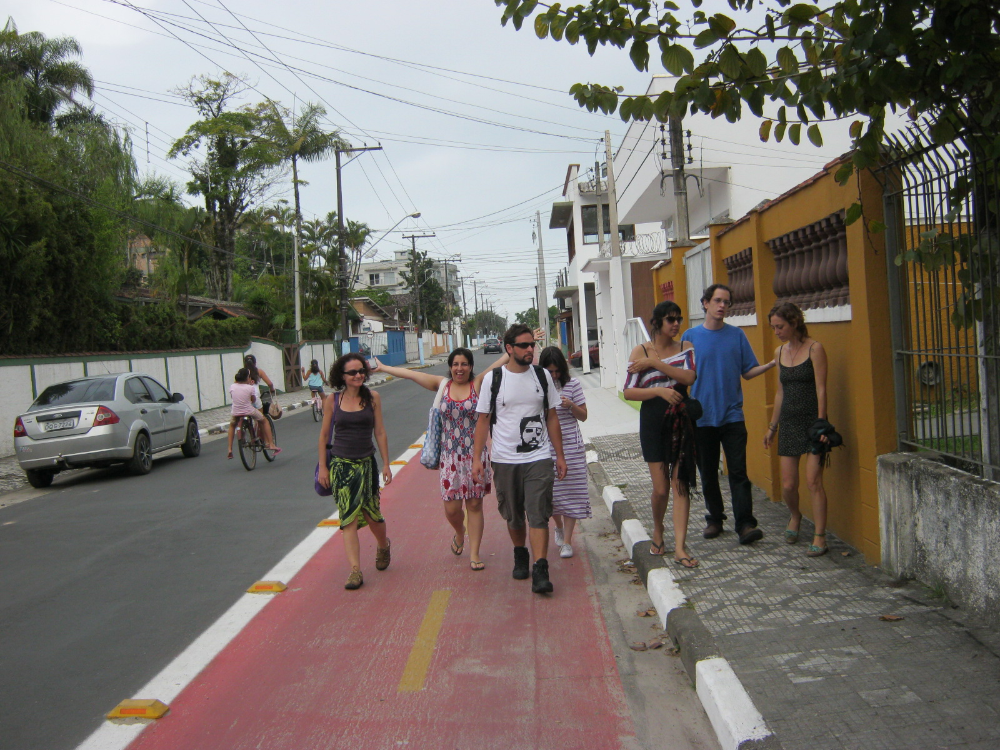
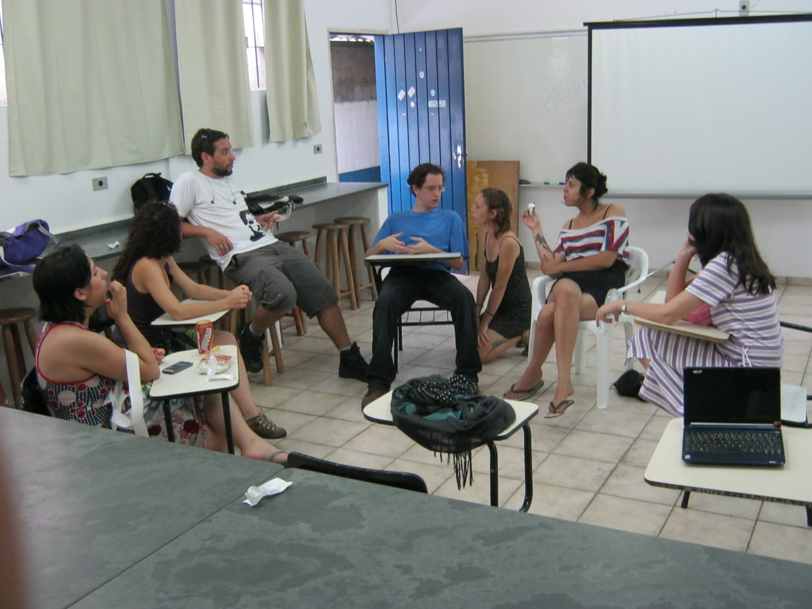
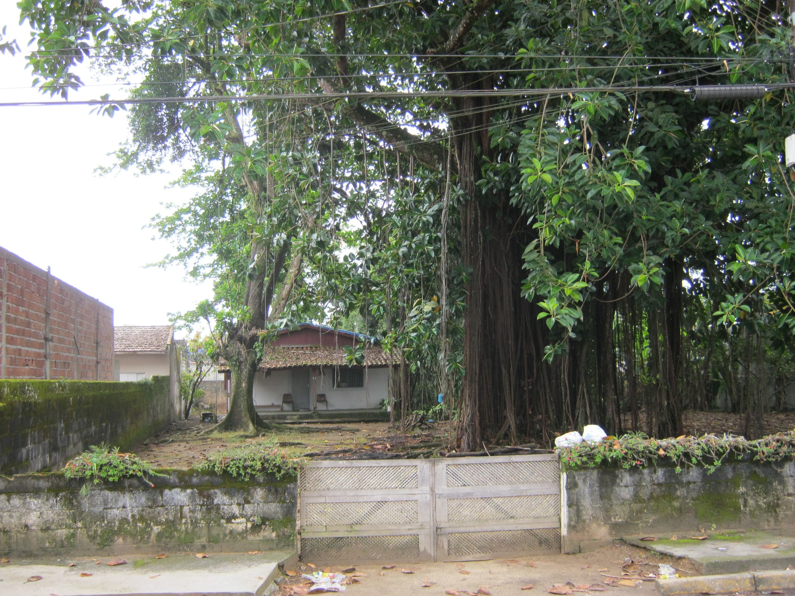
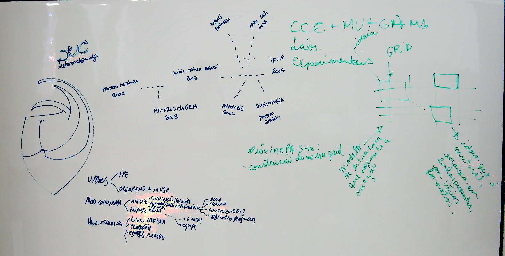

No final de novembro de 2011, o Coletivo MutGamb fez um encontrinho em Ubatuba. Felipe Fonseca já tinha compartilhado algumas fotos aqui. Agora seguem as de Orlando. E você, se anima para participar do Encontro Hipertropical da MetaReciclagem, em maio?









 O objetivo do encontro era decidir sobre planos futuros, metodologia de trabalho dos diferentes projetos e definir equipes e responsabilidades.
O objetivo do encontro era decidir sobre planos futuros, metodologia de trabalho dos diferentes projetos e definir equipes e responsabilidades.
 Em breve publicaremos por aqui as decisões tomadas, assim como mais informações sobre projetos atuais e futuros. Vem bastante novidade por aí...
Em breve publicaremos por aqui as decisões tomadas, assim como mais informações sobre projetos atuais e futuros. Vem bastante novidade por aí...